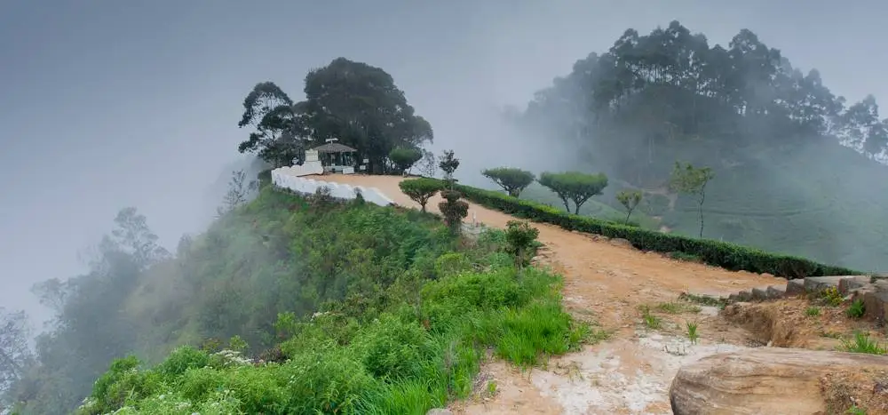
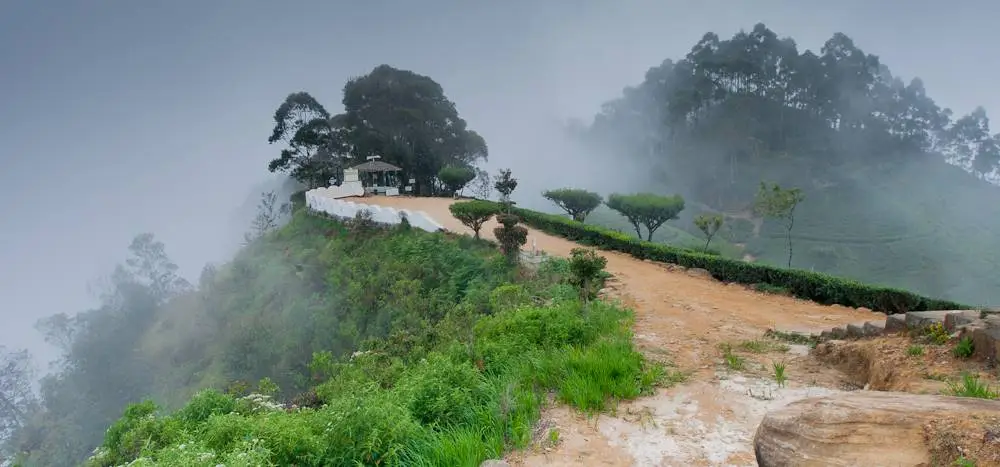

Lipton Seat
At the beginning of the nineteenth century, almost all the coffee plantations in Sri Lanka were in a state of confusion, and Sir Lipton decided to acquire 7 large estates and plant tea. "Tea for all" was Sir Lipton's philosophy. Although it may seem obvious today, in the nineteenth century only the wealthy could enjoy a cup of tea. It was a rare and expensive material to import. But 'Lipton Tea' became one of the most famous tea brands in the world, thus achieving Sir Lipton's goal of providing tea to all. He was the first to start selling tea in tea bags. So it is partly thanks to him that you can enjoy a great cup of tea every morning.
Lipton is the name given to a large area of 7 km covered with tea plantations near Ella, Haputale. This was Sir Lipton's favorite scene. With British colonization, Sri Lanka adopted the tea culture, and even today, Ceylon tea, produced in Sri Lanka, is one of the best teas in the world. The place where Sir Lipton sat to enjoy a 360-degree view of his tea plantations is called the Lipton Seat. It is located at a height of about 1970 feet above sea level. Today there is a statue of Sir Lipton at the site.
It was from here that the Scottish tea keeper Sir Thomas Lipton explored his burgeoning empire.This was his favorite vantage point. From there he can monitor the entire tea plantation he acquired in Sri Lanka. He must have been proud of himself by watching this scene. Lipton's seat is an endless destination in Sri Lanka. Handapanagala Lake, Chandrika Lake, Uda Wellwewa Lake, Vedi Hiti Kanda mountain range located in five provinces as well as Hambantota Harbor in the southern coastal region of Sri Lanka can be seen prominently.
 
